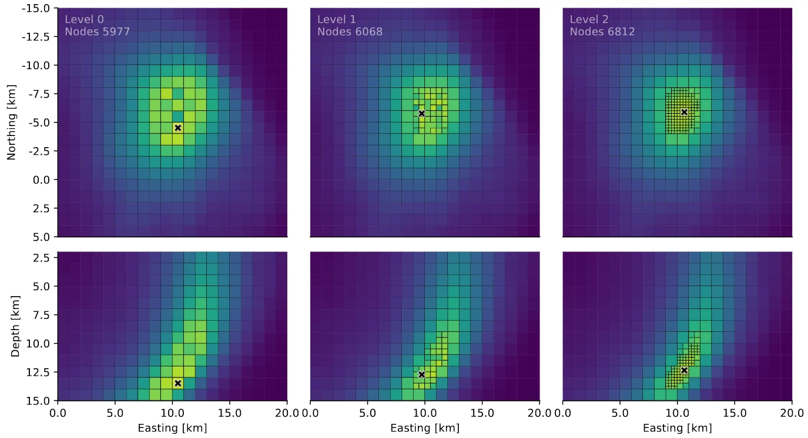

Octree
A 3D space is searched for sources of seismic energy. Qseek created an octree structure which is iteratively refined when energy is detected, to focus on the source' location. This speeds up the search and improves the resolution of the localisations.

Surface projection of the refined octree focusing on the seismic source region. In this example four levels of refinement are can be seen, refining the 3D octree from the initial 4000 nodes to 8823 nodes.
Octree Module
location-
The geographical center of the octree.
root_node_size:1000.0-
Size of the root node at the initial level (level 0) in meters.
n_levels:5-
Number of levels in the octree, defining the final resolution of the detection. Default is 5.
east_bounds-
East bounds of the octree in meters.
north_bounds-
North bounds of the octree in meters.
depth_bounds-
Depth bounds of the octree in meters.
pydantic-model
Bases: BaseModel, Iterator[Node]
Config:
ignored_types:(cached_property,)
Fields:
-
location(Location) -
root_node_size(PositiveFloat) -
n_levels(int) -
east_bounds(Range) -
north_bounds(Range) -
depth_bounds(Range) -
_root_nodes(list[Node]) -
_semblance(ndarray | None) -
_cached_coordinates(dict[CoordSystem, ndarray]) -
_nodes(list[Node])
Validators:
-
check_reference→location -
check_limits
pydantic-field
Depth bounds of the octree in meters.
pydantic-field
East bounds of the octree in meters.
cached
property
leaf_nodes: list[Node]
Get all leaf nodes of the octree.
Returns:
| Type | Description |
|---|---|
list[Node]
|
list[Node]: List of leaf nodes. |
pydantic-field
The geographical center of the octree.
pydantic-field
n_levels: int = 5
Number of levels in the octree, defining the final resolution of the detection. Default is 5.
pydantic-field
North bounds of the octree in meters.
pydantic-field
root_node_size: PositiveFloat = 1 * KM
Size of the root node at the initial level (level 0) in meters.
Returns a copy of the octree refined to the cached bottom nodes.
Raises:
| Type | Description |
|---|---|
EnvironmentError
|
If the octree has never been split. |
Returns:
| Name | Type | Description |
|---|---|---|
Self |
Self
|
Copy of the octree with cached bottom nodes. |
Returns the 3D distances from all nodes to all stations.
Parameters:
| Name | Type | Description | Default |
|---|---|---|---|
stations
|
Stations
|
Stations to calculate distance to. |
required |
Returns:
| Type | Description |
|---|---|
ndarray
|
np.ndarray: Of shape (n-nodes, n-stations). |
Returns the surface distance from all nodes to all stations.
Parameters:
| Name | Type | Description | Default |
|---|---|---|---|
stations
|
Stations
|
Stations to calculate distance to. |
required |
Returns:
| Type | Description |
|---|---|
ndarray
|
np.ndarray: Distances in shape (n-nodes, n-stations). |
get_corners() -> list[Location]
Get the corners of the octree.
Returns:
| Type | Description |
|---|---|
list[Location]
|
list[Location]: List of locations. |
async
Interpolate the location of the maximum semblance value.
This method calculates the location of the maximum semblance value by performing interpolation using surrounding nodes. It uses the scipy Rbf (Radial basis function) interpolation method to fit a smooth function to the given data points. The function is then minimized to find the location of the maximum value.
Returns:
| Name | Type | Description |
|---|---|---|
Location |
Location
|
Location of the maximum semblance value. |
Raises:
| Type | Description |
|---|---|
AttributeError
|
If no semblance values are set. |
map_semblance(semblance: ndarray, leaf_only: bool = True) -> None
Maps semblance values to nodes.
Parameters:
| Name | Type | Description | Default |
|---|---|---|---|
semblance
|
ndarray
|
Of shape (n-nodes,). |
required |
leaf_only
|
bool
|
If True, only leaf nodes are mapped. Defaults to True. |
True
|
model_post_init(__context: Any) -> None
Initialize octree. This method is called by the pydantic model.
reduce_axis(surface: Literal['NE', 'ED', 'ND'] = 'NE', max_level: int = -1, accumulator: Callable[ndarray] = max) -> ndarray
Reduce the octree's nodes to the surface.
Parameters:
| Name | Type | Description | Default |
|---|---|---|---|
surface
|
Literal['NE', 'ED', 'ND']
|
Surface to reduce to. Defaults to "NE". |
'NE'
|
max_level
|
int
|
Maximum level to reduce to. Defaults to -1. |
-1
|
accumulator
|
Callable
|
Accumulator function. Defaults to np.max. |
max
|
Returns:
| Type | Description |
|---|---|
ndarray
|
np.ndarray: Of shape (n-nodes, 4) with columns (east, north, depth, value). |
save_pickle(filename: Path) -> None
Save the octree to a pickle file.
Parameters:
| Name | Type | Description | Default |
|---|---|---|---|
filename
|
Path
|
Filename to save to. |
required |
set_level(level: int) -> None
Set the octree to a specific level.
Parameters:
| Name | Type | Description | Default |
|---|---|---|---|
level
|
int
|
Level to set the octree to. |
required |